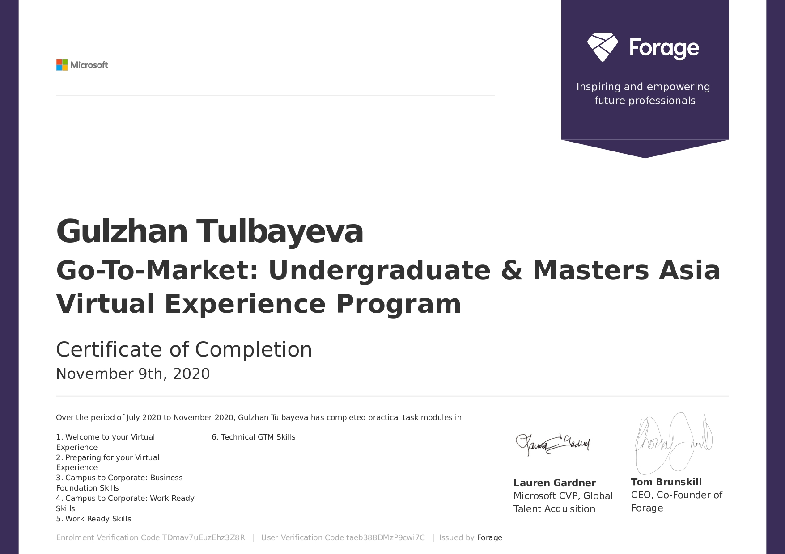

Gulzhan Tulbayeva
Senior Student at Nazarbayev University
Astana, Kazakhstan
gulzhan.tulbayeva.nu.edu.kz
8 777 622 06 43
Skills
C programming
Problem solving
Data Analysis
Abstract Thinking
Languages
English
Kazakh
Russian
Work Experience
Research Assistant/ CoronaNet Project
Jan 2022 - Current
Coding policies: I tracked government responses towards COVID-19 and coded policies for the Transbaikal region and Tomsk oblast (Russia). Throughout the internship, I have coded 70 governmental policies.Data integration: I was assessing the overlap between data external to CoronaNet and then recording data that is currently missing from CoronaNet into the CoronaNet taxonomy.
English Teacher/ RB Academy
Mar 2021 - Dec 2022
I had 2 classes of 12 students and I prepared them to pass the entrance test on English for NIS. As a result, 13 students were successfully admitted to NIS and 3 of my students scored 200 out of 200 in the English section.
Intern in the department of strategy and management of investment portfolios/ JSC NC KazMunayGas
May 2022- Jun 2022
I was detecting errors in KPI's reports after implementing corrections. My department was able to submit all reports on time without any mistakes. I was constructing a presentation of the final performance of corporate KPI's of individual subsidiaries and affiliates of KMG in 2021. I was constructing a presentation of the final results of KMG's Corporate KPIs and Motivational KPIs of Executive Employees of KMG for 2021 which was used in BoD meetings. I was translating the Resolution of the Board of Directors, Explanatory Notes, and other documents into English. I was assisting staff with general office duties such as research, collection of signatures, data entry, filing, and general coordination
Education
Nazarbayev University, Bachelor of Science in Mathematics
2019-2023
Classes taken: Programming for Scientists and Engineers, Calculus I, II, III, Linear Algebra and Differential Equations Discrete Mathematics, Real Analysis I, Probability, Linear Algebra, Mathematical Statistics, Actuarial Mathematics, Numerical Methods, Linear Programming, Research Methods, Introduction to Macroeconomics, Fourier Analysis, Science Writing, Nonlinear Differential equations, Geostatistics, Principals of finance, Ethics and Mathematical biology.
NUFYP
2018-2019
Foundation program
KPMG Summer School
_page-0001.jpg)
2022
Audit course
Go-To-Market: Undergraduate & Masters Asia Virtual Experience Program
2021
Participant